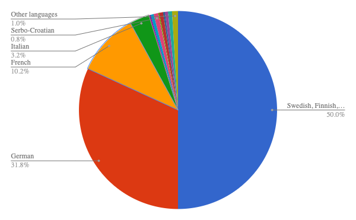

In folk culture it is a lot more centralized and nieche, it focuses on the land of that area and whatnot. On the other hand, pop culture is very genral and globalized. Pop culture tends to harm the enviroment more than folk culture simply because it has more adherents. Folk culture ussually links with the enviroment to dictate clothing, cuisne and other factors.
One large element of culture is music; Sweden's folk music traditionally relies on the fiddle and is genrally a waltz, polska, or polka.
Swedes used to dress in dresses and suits but since american culture has been globalized, most swedes just dress in american clothes and more casual outfits.
Pidgin Language: A simplified form of a language that has simplified grammer and less words, it has no native speaker.
Creolization: The mixing of a native language and a colonizers language to make a new language.
Lingua Franca: A language used and understood in multiple countries for trade or other various reasons.
By far, the most dominent language in Sweden is Swedish. There are some little folk languages and Eastern European languages sprinkled about the country.
There is a long line to show how languages relate to each other called the language tree; It is a 4 depth tree: language family, which is a group of languages that share a linguistic ancestor from pre-recorded history; language branch, which share a common language family; language group, which all share a common language branch; and language dialect, a small regional varience in languages like pronuciation and some words.
Most non-native languages came from relocation diffusion. There are a few different dialects of Swedish like Göta, Svea, Skåne, Uppland, När Socken; The dialects that helped make proper Swedish were Göta and Svea. While Swedish is still more commonly spoken and is the official language of Sweden, more that 80% of the population knows English, the biggest lingua franca.
An autonomous religion can be done by ones self, doesn't rely on others too much, and has no organization of leadership, like buddhism. Heirarchical religions however meet in weekly congregations, and do a lot of group worship as well as having a structure of power.
There are two types of religions, ethnic and universalizing. Universalizing is a more broad religion that is aimed towards more that one culture; Ethnic religions are very specific and based around one culture, they will often times be heavily associated with the surrounding land and nature.
The most commonly practiced religion in Sweden is the Church of Sweden, a branch of Christianity, which is a universalizing religion. Christians believe in the worship of a man named Jesus, a jew who went throughout his life performing miracles only to be killed by the people than resurected. They also believe in salvation to heaven. They are monotheistic and hierarchical religion. There are some divides from here, but the main branch of Christianity in Sweden is protestants, who belive that salvation is achieved through gods grace, not works, and that the bible is the ultimate truth. Protestants are a Heirarchical branch, but not so as much as the Roman Catholics or the Latter Day Saints. They still have a church they meet in weekly but not quite as much organization of power.